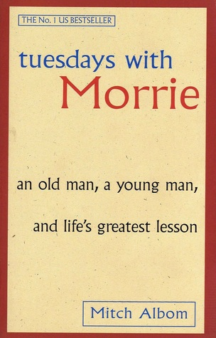

Some Fun Facts About Me
Favorite Book

tuesdays with Morrie is one of my favorite books because I can relate to
Mitch Albom the author. Spending time with his professor and still continuing
to learn from him. It's a heart-warming story.
tuesdays with Morrie - Mitch Al bom
tuesdays with Morrie - Mitch Al bom